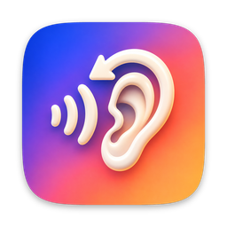

Relisten
Mac 英语精听播放器：一句一句听，听不清就再来一遍。
隐私政策
Relisten 不收集、不上传、不分享任何数据。
- 你打开的视频、音频和字幕文件只在你的 Mac 上读取和处理，不会离开这台电脑。
- App 没有账号系统，没有统计分析、广告或第三方 SDK；它在 App Sandbox 中运行，并且没有申请网络访问权限。
- 收藏的句子、播放进度和快捷键设置保存在本机的 App 容器里，删除 App 即一并删除。
- 为了播放 mkv 等格式，App 会在本机缓存目录生成转换后的副本，可随时在「访达」中删除。
Privacy Policy (English)
Relisten does not collect, upload or share any data. Media and subtitle files you open are read and processed only on your Mac. There are no accounts, analytics, ads or third-party SDKs; the app runs in the App Sandbox without network access. Favorites, playback positions and settings stay in the app's local container and are removed with the app. Converted copies of formats such as MKV are cached locally and can be deleted at any time.
最后更新 / Last updated: 2026-10-13
使用支持
它能做什么
- 打开带字幕的视频或音频：支持内封字幕（mp4、mkv 等）和同名外挂 .srt / .vtt / .ass。
- 按句子跳转、重听、单句循环、逐句暂停；盲听时按住键临时看字幕或中文翻译。
- 片段循环：把一句里最难的半句抠出来反复听，可配合 0.5x–2x 变速（音调不变）。
想先试试？下载 80 秒的示例视频（原创英文对白，内封英文和简体中文字幕），拖进 Relisten 即可。 Try it with this 80-second sample (original dialogue, embedded English and Simplified Chinese subtitles).
常用快捷键
空格 播放/暂停 · ←/→ 上一句/下一句 · ↓ 重听本句 · L 单句循环 · P 逐句暂停 · 按住 ↑ 看字幕 · 按住 C 看翻译 · R 循环刚才 3 秒 · A 标记片段 · [/] 变速 · F 收藏。 所有快捷键都可在「设置 → 快捷键」中修改。
常见问题
- 外挂字幕没有自动加载？ 沙盒只允许读取你选择的文件。点右侧列表顶部的「允许读取同目录的字幕文件」授权一次即可，或直接把字幕文件拖进窗口。
- 为什么 mkv 第一次打开要等一会儿？ 系统播放器不直接支持 mkv，App 会在本机转换一次封装，之后再打开就是秒开。
开源组件
Relisten 内置 FFmpeg（LGPL v2.1+）的 ffmpeg / ffprobe 命令行工具，许可文本见 App 内「帮助 → 第三方开源许可」。